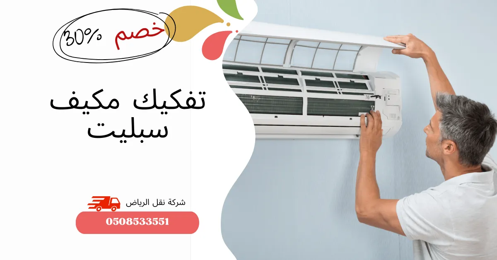

تفكيك مكيف سبليت بالرياض

يبحث الكثير من الأشخاص عن فنيين تفكيك مكيف سبليت، ولذلك لأنه يتطلب مهارة ودقة عالية لتجنب الأضرار وحفظ جميع أجزاء الجهاز بشكل سليم، كما يعتبر هذا الأمر من المهام المعقدة التي تحتاج إلى فنيين متخصصين في هذا المجال، حيث يشمل غسيل مكيفات سبليت تفكيك الوحدات الداخلية والخارجية، وفصل الأسلاك، وضمان عدم تسرب الفريون، حيث يعد التفكيك الصحيح خطوة أساسية لضمان سلامة المكيف خلال النقل أو الصيانة، بالإضافة إلى إمكانية تركيب الجهاز مرة أخرى بشكل صحيح دون أي مشاكل.
تفكيك مكيف سبليت
يحتاج تفكيك مكيف سبليت إلى خطوات دقيقة، للغاية لتتأكد من عمل المكيف بشكل سليم بعد إعادة التركيب، كما تبدأ العملية بفصل التيار الكهربائي عن المكيف للتأكد من عدم حدوث أي تماس كهربائي، وفي هذه الخطوة يتم فصل الوحدات الداخلية والخارجية بحذر، مع ضرورة استخدام الأدوات الخاصة لفصل الأسلاك والأنابيب بشكل آمن دون أي تأثير على الأجزاء الحساسة، كما أن من الضروري أن يقوم الفني بتفريغ الفريون في جهاز خاص لضمان عدم تسريبه أثناء عملية التفكيك، حيث أن تسرب الفريون قد يؤثر على كفاءة المكيف ويضر بالبيئة، بعد الانتهاء من التفكيك يتم تغليف الوحدات بعناية لحمايتها من الخدوش والأضرار، وتخزينها في مكان جاف وآمن، جميع هذه الخطوات يجب أن تتم بعناية ودقة ولهذا السبب يفضل الاستعانة بفني متخصص لضمان تفكيك المكيف بالشكل الأمثل.
خطوات تفكيك مكيف سبليت بدقة وسلامة
إذا كنت تريد معرفة خطوات تفكيك مكيف سبليت، يجب أن تكون على علم بأنه يتطلب أفضل الفنيين وذلك لأنه يتطلب عدة خطوات دقيقة لضمان السلامة والكفاءة، حيث تبدأ العملية أولاً بفصل التيار الكهربائي، وبعدها يجب على الفني فصل الوحدة الداخلية بعناية، باستخدام الأدوات المناسبة لفك المسامير والأسلاك الخاصة بعد ذلك، يتم فصل الأنابيب النحاسية المتصلة بوحدة التبريد الخارجية بشكل حذر، ومع ضرورة تفريغ الفريون في جهاز مخصص لضمان عدم تسريبه، في هذه الخطوة يتم فك الوحدة الخارجية، مع مراعاة عدم تعرض المكونات الداخلية لأي ضرر، كما يجب تغليف جميع الأجزاء بعناية باستخدام مواد حماية خاصة لمنع الخدوش أو الأضرار أثناء النقل وأخيرًا، يتم تخزين الوحدات في مكان جاف وآمن تعد هذه الخطوات ضرورية لتفكيك المكيف بشكل سليم واحترافي.
أهم الخطوات الدقيقة لـ تفكيك مكيف سبليت
- فصل التيار الكهربائي عن المكيف.
- فك الوحدة الداخلية بحذر.
- فصل الأنابيب النحاسية بعناية.
- تفريغ الفريون بشكل آمن.
- فك الوحدة الخارجية بعناية.
- تغليف الأجزاء لحمايتها أثناء النقل.
- تخزين الأجزاء في مكان جاف وآمن.
أهمية تفريغ الفريون أثناء التفكيك
تعتبر خطوة تفريغ الفريون أثناء تفكيك مكيف سبليت للحفاظ على كفاءة النظام وضمان سلامته، حيث أن الفريون هو مادة أساسية في عملية التبريد، كما يجب تفريغه بشكل احترافي لتجنب تسريبه في البيئة حيث إنه قد يسبب أضرارًا صحية وتلوثًا بيئيًا بالإضافة إلى ذلك، فإن تفريغ الفريون بشكل آمن يسهم في حماية الأجزاء الداخلية للمكيف من التلف، حيث يساعد على منع تراكم الضغوط على أنابيب التبريد والمكونات الأخرى، ولأن العملية تمنع أي تفاعل غير مرغوب فيه بين الفريون والمواد الأخرى التي قد تكون موجودة أثناء التفكيك، مما يضمن سلامة عملية النقل والتركيب لاحقًا لذا، عليك تفريغ الفريون بواسطة فنيين مختصين وذوي خبرة، باستخدام الأجهزة والمعدات المناسبة لضمان التخلص الآمن من المادة.
أهمية تفريغ الفريون
- حماية البيئة من تسرب الفريون.
- ضمان سلامة الأجزاء الداخلية للمكيف.
- منع التفاعل غير المرغوب فيه أثناء التفكيك.
- ضمان أمان عملية النقل والتركيب لاحقًا.
الأدوات اللازمة لتفكيك مكيف سبليت
إذا كنت تريد تفكيك مكيف سبليت بشكل دقيق وآمن، فأنت يحتاج إلى فني الذي يوفر مجموعة من الأدوات المتخصصة التي تضمن حماية الجهاز أثناء عملية التفكيك وضمان سلامة جميع الأجزاء، كما تشمل الأدوات الأساسية التي يجب استخدامها:
- مفتاح فك البراغي: لفك البراغي التي تثبت الأجزاء المختلفة للمكيف مثل الوحدة الداخلية والخارجية.
- مضخة تفريغ: تساعد في تفريغ الفريون من المكيف بشكل آمن قبل التفكيك.
- مقياس الضغط: لقياس الضغط داخل أنابيب الفريون قبل بدء التفكيك.
- أنابيب تفريغ الفريون: لنقل الفريون إلى جهاز التفريغ أو الحاوية المخصصة له.
- كماشة: لتأمين الأسلاك الكهربائية وفصلها بشكل آمن.
- شريط لاصق: لتغطية الأطراف الحادة أو الأسطح القابلة للكسر أثناء عملية التفكيك.
- مفك براغي كهربائي: لتسريع عملية فك البراغي الصغيرة.
عند استخدام هذه الأدوات بشكل صحيح، سوف يساعدك في تفكيك المكيف بشكل آمن ويضمن الحفاظ على سلامة الأجزاء وحمايتها من أي تلف أثناء النقل.
نصائح لإعادة تركيب مكيف سبليت بعد التفكيك
تتطلب عملية إعادة تركيب مكيف سبليت بعد التفكيك الدقة والحرص لضمان أداء الجهاز بشكل فعال، ولذلك قمنا بتوفير بعض النصائح التي يجب اتباعها أثناء عملية إعادة التركيب:
التحقق من الأجزاء
أولا عليك التأكد من فحص جميع الأجزاء مثل الوحدة الداخلية والخارجية والأنابيب، والتأكد من عدم وجود أي تلف أو تسريب في الفريون.
تركيب الأنابيب بحذر
في هذه الخطوة وعند توصيل الأنابيب يجب التأكد من أنها مشدودة بشكل صحيح لتفادي أي تسريب في النظام.
إعادة ملء الفريون
قم بالتأكد من تعبئة الفريون بالكمية المناسبة وضبط الضغط داخل الأنابيب حسب احتياجات المكيف.
التحقق من الأسلاك الكهربائية
تأكد من توصيل الأسلاك بشكل صحيح لتجنب حدوث أي مشاكل كهربائية.
الاختبار بعد التركيب
بعد الانتهاء من تركيب المكيف، قم بتشغيله واختباره للتأكد من أنه يعمل بشكل صحيح.
أهم نصائح شركة تفكيك مكيف سبليت
- فحص الأجزاء جيدًا قبل التركيب.
- التأكد من تثبيت الأنابيب بشكل محكم.
- تعبئة الفريون بشكل دقيق.
- التأكد من سلامة الأسلاك الكهربائية.
الأسئلة الشائعة حول تفكيك مكيف سبليت
ما هي الأسباب التي تستدعي تفكيك مكيف سبليت؟
من الأسباب التي تستدعي إلى تفكيك مكيف سبليت، قد تكون عند نقله إلى موقع آخر، أو أثناء الصيانة الدورية، أو عند استبدال أجزاء معينة من الجهاز، كما تتم عملية التفكيك لضمان فحص الأجزاء الداخلية للمكيف، مثل الفلاتر والمضخة، وضمان عملها بشكل سليم.
هل يمكن تفكيك مكيف سبليت بدون مساعدة فني متخصص؟
يفضل دائمًا الاستعانة بفني متخصص عند تفكيك مكيف سبليت، حيث أن ذلك يتطلب معرفة دقيقة بالأجهزة الكهربائية والميكانيكية لضمان عدم حدوث أضرار، وتفريغ الفريون بشكل آمن.
هل تقدم شركة تفكيك مكيف سبليت خصومات؟
نعم، توفر شركة تفكيك مكيفات سبليت خصومات وعروض خاصة لعملائها قد تصل إلى 30%، سواء كانت على خدمات التفكيك أو التركيب أو الصيانة، حيث أن هذه العروض قد تكون موسمية أو تتعلق بعدد الوحدات التي يتم تفكيكها أو تركيبها، كما أن أيضًا، نقدم خصومات للعملاء الجدد أو في حال طلبهم خدمات صيانة دورية، للحصول على أفضل العروض،يفضل التواصل مع الشركة لمعرفة تفاصيل الخصومات المتاحة في الوقت الحالي.
في النهاية تعتبر عملية تفكيك مكيف سبليت من العمليات التي يجب أن تتم بحذر ودقة، خاصةً إذا كان الهدف هو إعادة التركيب أو النقل، بالإضافة إلى الحفاظ على سلامة المكيف يتطلب اتباع خطوات محددة وتفريغ الفريون بشكل سليم واستخدام الأدوات المناسبة، ومع ضرورة الاستعانة بفني متخصص فإنك تضمن الحفاظ على كفاءة المكيف وعمره الافتراضي، لضمان نجاح عملية التفكيك لذلك يفضل الاعتماد على شركات فنية متخصصة ذات خبرة في التعامل مع مكيفات السبليت لضمان تفكيك الجهاز بأمان، مما يساهم في الحفاظ عليه وحمايته من الأضرار.